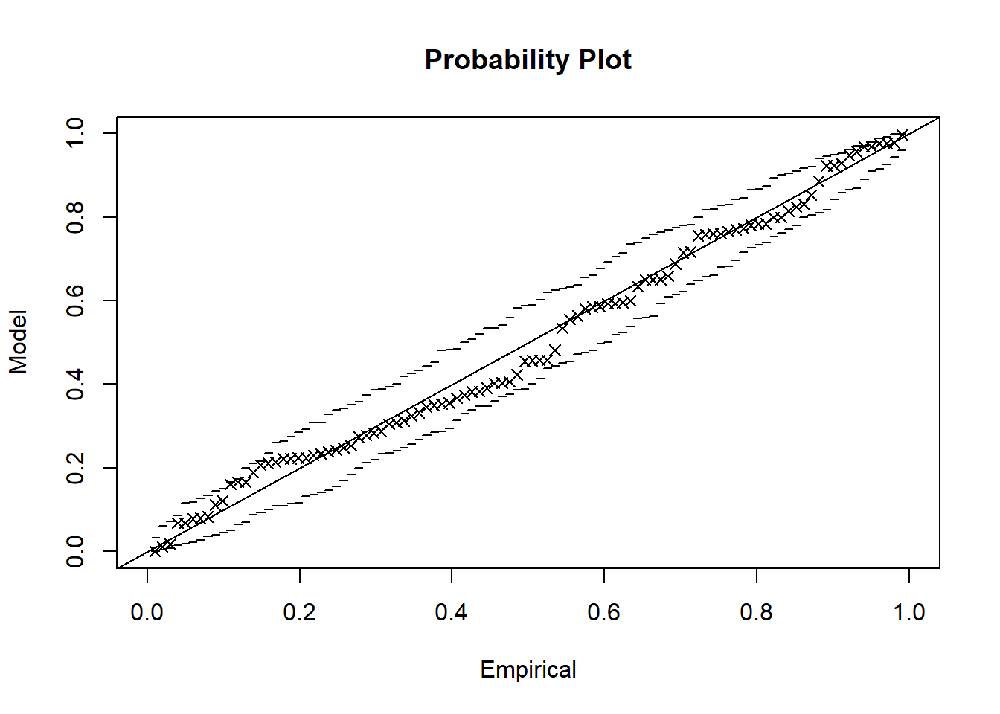
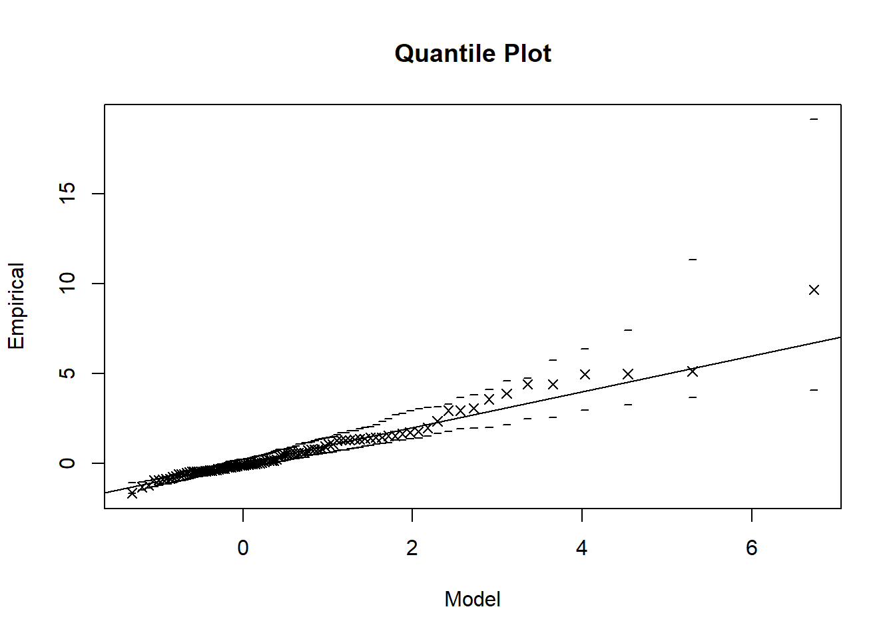
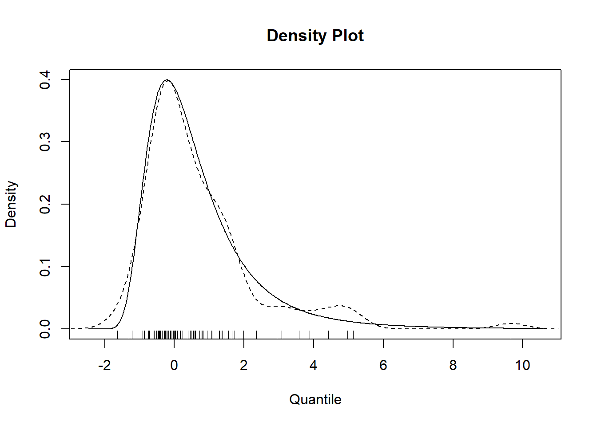
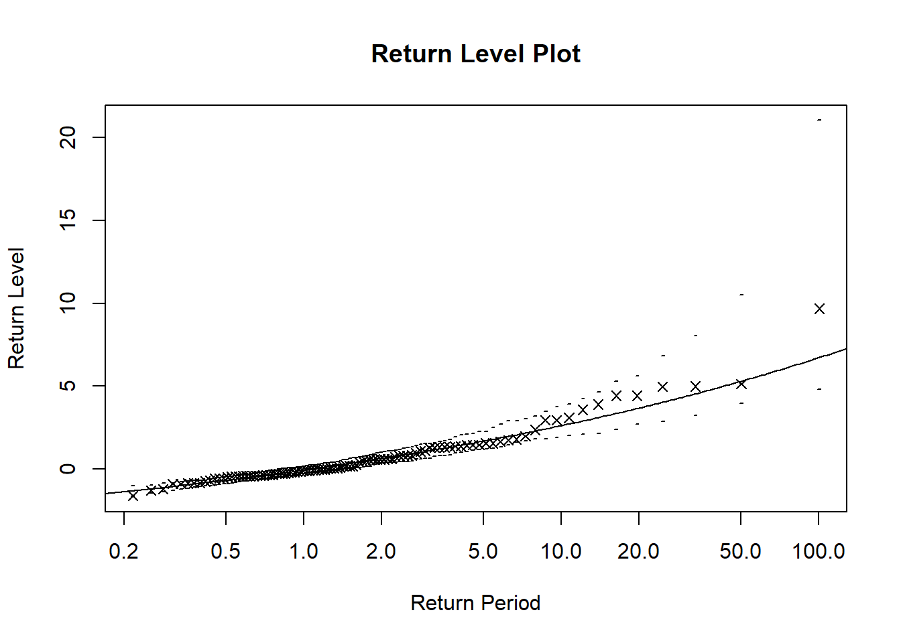
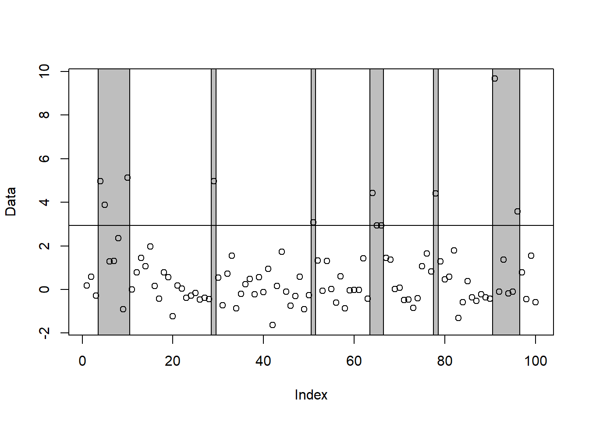

require(evd)
require(knitr) #「従属パラメータと従属関数の関係」の表作成に使用evd
パッケージの概要
evdは、極値理論に基づく統計解析を行うためのパッケージです。 シミュレーション、分布、分位点、密度関数をパラメトリック極値分布に拡張し、以下を計算するフィッティング関数を提供します。
- 一変量および二変量の最大値モデルの最尤推定
- 一変量および二変量の閾値モデルの最尤推定
極値理論は、分布から大きく外れるような極端な事象をモデル化するための手法であり、保険分野においても、再保険や巨大自然災害リスクの分析、リスク管理でのテイル評価等に利用されています。
一変量極値分布のフィッティング
まずは、一変量のデータを用いて極値分布のフィッティングを行います。rgev関数により一般化極値分布（GEV）に従う乱数を100個生成し、fgev関数を用いて生成したデータに最尤推定（MLE）でフィットさせます。
なお、rgev関数の引数で次のとおりGEVのパラメータを指定しています。
- loc = 0 ：位置パラメータ \mu
- scale = 1 ：尺度パラメータ \sigma
- shape = 0.2：形状パラメータ \xi
# サンプルデータ生成 (GEV)
set.seed(123)
uv_data <- rgev(100, loc = 0, scale = 1, shape = 0.2)
# GEVモデルをデータにフィットさせる
fit_gev <- fgev(uv_data)print関数により、逸脱度（Deviance）やパラメータの推定値等のフィッティング結果を確認してみましょう。
# フィット結果の表示
print(fit_gev)
Call: fgev(x = uv_data)
Deviance: 323.7182
Estimates
loc scale shape
-0.06327 0.93540 0.18417
Standard Errors
loc scale shape
0.10331 0.08055 0.06814
Optimization Information
Convergence: successful
Function Evaluations: 44
Gradient Evaluations: 13 # フィット結果のプロット
plot(fit_gev)



クラスタリング
clusters関数により、閾値を超える極値のクラスタリングを行うことができます。
下記のコードの場合は、次の手順でクラスタリングを行っています。
- 90％分位点を閾値とし、閾値を超過する値を検出
- 閾値超過が現れると、クラスタを開始する
- クラスタは、5個の連続した値が閾値を下回る（または閾値と等しくなる）まではアクティブのままである
- 5個の連続した値が閾値を下回る（または閾値と等しくなる）とクラスタ終了となる
- 次に閾値超過が現れると、また新たなクラスタを開始する
- 上記を繰り返す
# 閾値を超える値をクラスタリング
clusters <- clusters(uv_data, u = quantile(uv_data, 0.90), r = 5, plot = TRUE)
print(clusters)$cluster1
4 5 6 7 8 9 10
4.9791797 3.8921295 1.2935390 1.3026215 2.3542219 -0.9087379 5.1398615
$cluster2
29
4.96719
$cluster3
51
3.082629
$cluster4
64 65 66
4.421884 2.946345 2.947338
$cluster5
78
4.413705
$cluster6
91 92 93 94 95 96
9.6701628 -0.1021885 1.3614241 -0.1725861 -0.1076155 3.5756905
attr(,"acs")
[1] 1.666667
Noteなぜクラスタリングを行うか
時系列データでは、閾値を超える極端な値が連続して現れることが珍しくありません。例えば、一度の台風において高波が何度も起こったり、大地震の余震が連続して発生することはよくあるかと思います。このとき、こうした時系列データをそのまま統計モデルに当てはめると、独立同分布の仮定が成立しなくなってしまいます。そこで、極値理論では、これらの連続した極値を一つのクラスタとしてまとめる方法が使われているのです。
二変量極値分布のフィッティング
次に、二変量のデータを用いて同様に極値分布のフィッティングを行います。一変量と同じように、print関数によってフィッティング結果の確認も可能です。
# サンプルデータ生成 (二変量ロジスティックモデル)
set.seed(123)
bv_data <- rbvevd(100, dep = 0.7, model = "log")
# ロジスティックモデルをデータにフィットさせる
fit_bv <- fbvevd(bv_data, model = "log")
print(fit_bv)
Call: fbvevd(x = bv_data, model = "log")
Deviance: 578.8536
AIC: 592.8536
Dependence: 0.3276571
Estimates
loc1 scale1 shape1 loc2 scale2 shape2 dep
0.01609 0.97473 -0.04024 0.12028 0.93140 -0.08733 0.74187
Standard Errors
loc1 scale1 shape1 loc2 scale2 shape2 dep
0.10914 0.08230 0.07296 0.10225 0.07103 0.05012 0.06162
Optimization Information
Convergence: successful
Function Evaluations: 44
Gradient Evaluations: 11 作成した二変量極値分布について、abvevd関数を用いれば従属構造を確認できます。「plot = TRUE」とすることで従属関数がプロット表示されるので、2つの変数間の極端な値の同時発生に対する従属関係を可視化できます。
先ほどのフィッティング結果より、生成したデータの従属パラメータdepは0.74187となっており、弱い従属関係と言えます。このため、従属関数の形状も緩やかに下に凹んでいるのがわかります。
# 従属関数のプロット
abvevd(dep = fit_bv$estimate["dep"], model = "log", plot = TRUE)
fit_bv$estimate["dep"] dep
0.7418707
Note従属パラメータと従属関数の関係
従属パラメータdepは0から1までの値を取り、従属パラメータの大小によって従属関数の形状や従属の程度は下表のとおりとなります。
| dep | 従属関数の形 | 意味 |
|---|---|---|
| 1 | A(w) = 1 | 完全独立 |
| 0.7 | 少し凹む | 弱い従属 |
| 0.4 | かなり凹む | 中程度の従属 |
| 0.1 | V字に近い | 強い従属 |
| 0 | A(w) = max(w, 1 − w) | 完全従属 |
独立性の仮説検定
最後に、独立性の仮説検定を行います。evind.test関数により検定が可能です。二変量ロジスティックモデルを仮定して、帰無仮説dep=1（独立）に対して、対立仮説dep<1（従属あり）を検定します。なお、evind.test関数ではmethodの引数により、スコア検定（score）か尤度比検定（ratio）が選択できます。次のコードではスコア検定を行っています。
# 独立性検定（ロジスティックモデル）
ind_test <- evind.test(bv_data, method = "score")
print(ind_test)
Score Test Of Independence
data: bv_data
norm.score = -14.17, p-value < 2.2e-16
alternative hypothesis: true dependence is greater than independence
sample estimates:
dep
0.7418707 検定の結果を見ると、p値が非常に小さくなっており、帰無仮説（独立）を棄却できると考えられます。このため、変数間には統計的に有意な従属関係があると判断できます。先ほどabvevd関数により確認した内容と整合する結果となりました。